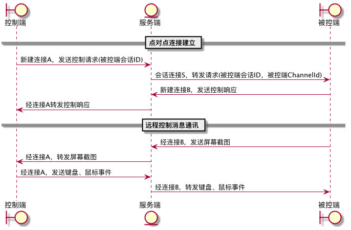

本文是Jtv的开发笔记。Jtv是一个远程桌面工具。
概述
当前的客户端程序已经经过一轮重构。这轮重构将会话管理和控制窗口进行了分离。会话管理与主窗口关联。远程控制窗口使用自己的管理类，由这个类管理本窗口相关的连接，这样也方便后续增加同时控制多台远程机器的功能。
设计
功能设计
客户端程序主要处理这些任务：
-
客户端连接管理：由
ConnectionFactory管理连接的创建和销毁。 -
主窗口及会话管理：程序主窗口
MainFrame，这个窗口的模型类MainFrameManager管理会话连接，处理登录、注销等与服务端交互的命令。 -
充当被控服务：当接收到远程控制请求时，
MainFrameManager负责建立被控连接。被控连接建立后，启动屏幕捕捉线程。该线程按一定的频率，获取屏幕截图，并将它发送至被控连接。MainFrameManager的被控接收到鼠标键盘事件后，也负责处理事件的回放。由MainFrameManager来充当被控端，主要是考虑将来在服务端可以在被控端和控制端建立一对多的连接关系，被控方只需要发送一份屏幕截图，多个控制端都可以收到。 -
远程控制：当客户端作为控制端时，通过创建新的控制窗口
RemoteFrame来实现对远程桌面的监控和操作。RemoteFrame打开时，使用ConnectionFactory建立与服务器的新连接，用该连接发送控制请求。服务端接收到这个控制请求后，从中获取被控端会话ID。根据这个会话ID查找到目标客户端（被控端）的会话通道，将控制请求发送至被控端。被控端接受到这个连接请求后，创建被控连接，并发送接受控制的响应。服务端接收到响应后，将这个连接与控制端的连接进行绑定，建立控制端与被控端的点对点连接。之后两者间就可以通过这个连接对，进行屏幕和事件发送。

实现
网络通讯
连接管理
对连接的管理与之前服务端的方式有些类似，在ConnectionFactory中创建连接，在创建连接时注册closeFuture回调，在回调中对连接相关的集合进行清理。
private def createConnection()={
val result = Network.createChannel
result.foreach( ch => {
logger.info(s"新建连接:${ch.id().asLongText()}，设置会话ID为：${sessionId}")
sessionId.foreach(ChannelUtils.setSessionId(ch,_))
workChannels.put(ch.id().asLongText(),ch)
ch.closeFuture().addListener((future:ChannelFuture) =>{
logger.info(s"工作连接${future.channel().id().asLongText()}被关闭")
workChannels.remove(future.channel().id().asLongText())
})
})
result
}
def createConnection(callback:ConnectionCallback):Option[Connection]={
createConnection().map(new Connection(_,callback))
}
消息回调处理
上面代码中，不带参数的createConnection是私有方法，它负责建立连接。带参数的方法需要传递ConnectionCallback，这个对象作为连接的消息处理回调，方法返回的是Option[Connection]对象。这样能实现在不同的连接上注册不同的消息监听，执行特定的逻辑处理。如何实现在通道上接收到消息时，调用特定的回调呢？我是通过Channel的attr实现的。在Connection的构造器上将Connection对象绑定至它持有的Channel，当Handler接收到消息时，从Channel上获取Connection对象，并调用Connection上的消息回调函数即可。实现了不同类型的连接处理逻辑的分离。
Connection类：
class Connection(val channel:Channel,val callback:ConnectionCallback){conn=>
channel.closeFuture().addListener((future:ChannelFuture) =>{
callback.onClose(future)
})
ChannelUtils.setConnection(channel,this)
def sendMessage(message:JtvMessage)={
channel.writeAndFlush(message)
}
def close(): ChannelFuture ={
channel.close()
}
}
ChannelUtils.setConnection将Connection绑定至Channel的attr上。
def setConnection(channel:Channel,conn:Connection)={
channel.attr(CONNECTION_KEY).set(conn)
}
当Handler接收到消息时，只需要获取Channel上绑定的Connection对象的回调方法。
override def channelRead0(ctx: ChannelHandlerContext, msg: JtvMessage): Unit = {
logger.info(s"接收到消息:${msg}")
msg match {
case m:ClientSessionMessage => ChannelUtils.getConnection(ctx.channel()).foreach(_.callback.onMessage(ctx,m))
case _ => {
logger.info(s"无法识别的消息，关闭连接${ctx.channel().id().asLongText()}")
}
}
}
远程控制
远程控制的主要过程是：
-
被控端通过Java
Robot类获取屏幕画面，并发关至控制端。 -
控制端在远程控制窗口中，展示该画面。
-
控制端在远程控制窗口中进行的鼠标和键盘操作将被记录，并发送至被控端。
-
被控端获取到鼠标键盘消息后，通过
Robot类回放这些事件。
被控端
屏幕图像捕获
屏幕捕获使用单独的线程，按每秒12帧的速度（影片24帧/秒，我取一半），即83ms一帧进行捕获。
class ScreenCapture extends Thread{
val tk = Toolkit.getDefaultToolkit
val dm = tk.getScreenSize
val robot = new Robot()
val rec = new Rectangle(0,0,dm.width,dm.height)
val interval = 83
/*
type CaptureCallback = BufferedImage => Unit
var callback:Option[CaptureCallback] = None
def startCapture(cb:Option[CaptureCallback]): Unit ={
callback = cb
start()
}*/
override def run(): Unit = {
try {
while (!Thread.interrupted()) {
val startMillis = System.currentTimeMillis()
val bufferedImage = robot.createScreenCapture(rec)
MainFrameManager.setScreenCapture(bufferedImage)
/*callback match {
case Some(cb) => cb(bufferedImage)
case _ => None
}*/
Thread.sleep(System.currentTimeMillis()-startMillis)
}
}catch {
case _:InterruptedException => Thread.currentThread().interrupt()
}
}
def startCapture(): Unit ={
start()
}
def stopCapture(): Unit ={
//callback = None
interrupt()
}
}
取得的图像会被MainFrameManager通过被控连接，发送至控制端。
事件回放
当被控连接上接收到鼠标键盘事件时，由Robot类进行事件回放。
private val tk = Toolkit.getDefaultToolkit
private val dm = tk.getScreenSize
private val robot = new Robot()
def receiveMouseEvent(mouseEventMessage: MouseEventMessage): Unit ={
logger.info(s"接收鼠标事件${mouseEventMessage}")
mouseEventMessage.id match {
case MouseEvent.MOUSE_PRESSED => {
val button = mouseEventMessage.button
button match {
case MouseEvent.BUTTON1 => {
robot.mousePress(InputEvent.BUTTON1_MASK)
}
case MouseEvent.BUTTON2 => {
robot.mousePress(InputEvent.BUTTON2_MASK)
}
case MouseEvent.BUTTON3 => {
robot.mousePress(InputEvent.BUTTON3_MASK)
}
case _ => None
}
}
case MouseEvent.MOUSE_RELEASED | MouseEvent.MOUSE_CLICKED => {
val button = mouseEventMessage.button
button match {
case MouseEvent.BUTTON1 => {
robot.mouseRelease(InputEvent.BUTTON1_MASK)
}
case MouseEvent.BUTTON2 => {
robot.mouseRelease(InputEvent.BUTTON2_MASK)
}
case MouseEvent.BUTTON3 => {
robot.mouseRelease(InputEvent.BUTTON3_MASK)
}
case _ => None
}
}
case MouseEvent.MOUSE_WHEEL =>robot.mouseWheel(mouseEventMessage.wheelRotation)
case MouseEvent.MOUSE_MOVED | MouseEvent.MOUSE_DRAGGED => {
val x = mouseEventMessage.x * dm.width/mouseEventMessage.screenWidth
val y = mouseEventMessage.y * dm.height/mouseEventMessage.screenHeight
robot.mouseMove(x, y)
logger.info(s"(${mouseEventMessage.x},${mouseEventMessage.y})映射为(${x},${y})")
}
case _ => None
}
}
def receiveKeyEvent(keyEventMessage: KeyEventMessage): Unit ={
logger.info(s"接收键盘事件${keyEventMessage}")
keyEventMessage.id match {
case KeyEvent.KEY_PRESSED =>{
robot.keyPress(keyEventMessage.keyCode)
}
case KeyEvent.KEY_RELEASED=>{
robot.keyRelease(keyEventMessage.keyCode)
}
}
}
在logger.info的这行上面，我们对鼠标移动事件的坐标进行了转换。这是因为传递过来的消息中的坐标是控制端在控制窗口中的坐标，我们需要将它映射至被控端的屏幕坐标。dm.width和dm.height分别是控制窗口的宽度和高度。
控制端
屏幕图像回放
控制端我使用了自定义的Panel来绘制远程传来的屏幕图像。
lass RemoteDesktopPanel extends JPanel {
private var image:Option[BufferedImage] = None
private var changed = true
setBackground(Color.GRAY)
this.setFocusable(true)
def setImage(image: BufferedImage): Unit = { //this.image = image;
this.image = Some(image)
this.changed=true
this.repaint()
}
override def getPreferredSize: Dimension = {
super.getPreferredSize
}
override def paintComponent(g: Graphics): Unit = {
super.paintComponent(g)
if(changed && image.isDefined) {
val g2d = g.asInstanceOf[Graphics2D]
g2d.drawImage(image.get,0,0,getWidth,getHeight,this)
changed=false
}
}
}
控制端接收到屏幕图像后，会调用上面的setImage方法，这个方法会触发Panel的重绘，调用paintComponent方法，将图像绘制出来。默认情况下Panel是不能接收鼠标和键盘事件的，需要设置Panel的setFocusable(true)，
事件捕捉
在显示远程桌面的RemoteDesktopPanel上添加鼠标和键盘事件监听。监听到事件后，通过控制连接将事件发送至被控端。
val mouseAdapter = new MouseAdapter {
override def mouseClicked(e: MouseEvent): Unit = {
manager.sendEvent(e,canvasPanel.getWidth,canvasPanel.getHeight)
}
override def mousePressed(e: MouseEvent): Unit = {
manager.sendEvent(e,canvasPanel.getWidth,canvasPanel.getHeight)
}
override def mouseReleased(e: MouseEvent): Unit = {
manager.sendEvent(e,canvasPanel.getWidth,canvasPanel.getHeight)
}
override def mouseEntered(e: MouseEvent): Unit = {
manager.sendEvent(e,canvasPanel.getWidth,canvasPanel.getHeight)
}
override def mouseExited(e: MouseEvent): Unit = {
manager.sendEvent(e,canvasPanel.getWidth,canvasPanel.getHeight)
}
override def mouseWheelMoved(e: MouseWheelEvent): Unit = {
manager.sendEvent(e,canvasPanel.getWidth,canvasPanel.getHeight)
}
override def mouseDragged(e: MouseEvent): Unit = {
manager.sendEvent(e,canvasPanel.getWidth,canvasPanel.getHeight)
}
override def mouseMoved(e: MouseEvent): Unit = {
manager.sendEvent(e,canvasPanel.getWidth,canvasPanel.getHeight)
}
}
canvasPanel.addMouseListener(mouseAdapter)
canvasPanel.addMouseMotionListener(mouseAdapter)
canvasPanel.addMouseWheelListener(mouseAdapter)
val keyAdapter = new KeyAdapter {
override def keyTyped(e: KeyEvent): Unit = {
manager.sendEvent(e,canvasPanel.getWidth,canvasPanel.getHeight)
}
override def keyPressed(e: KeyEvent): Unit = {
manager.sendEvent(e,canvasPanel.getWidth,canvasPanel.getHeight)
}
override def keyReleased(e: KeyEvent): Unit = {
manager.sendEvent(e,canvasPanel.getWidth,canvasPanel.getHeight)
}
}
canvasPanel.addKeyListener(keyAdapter)
这里的canvasPanel就是一个RemoteDesktopPanel对象。
Comments